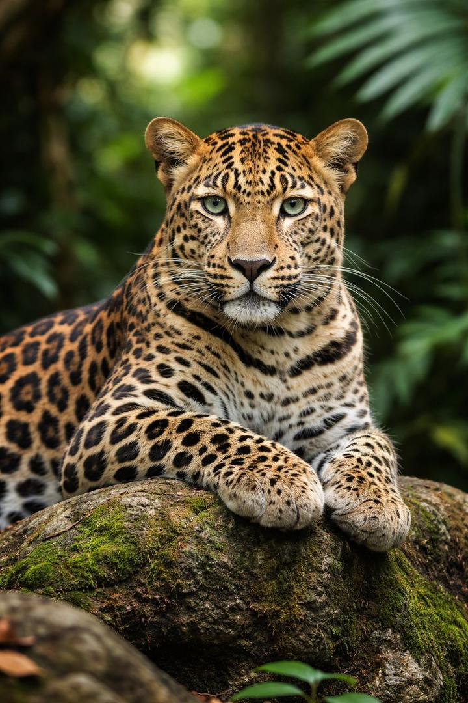
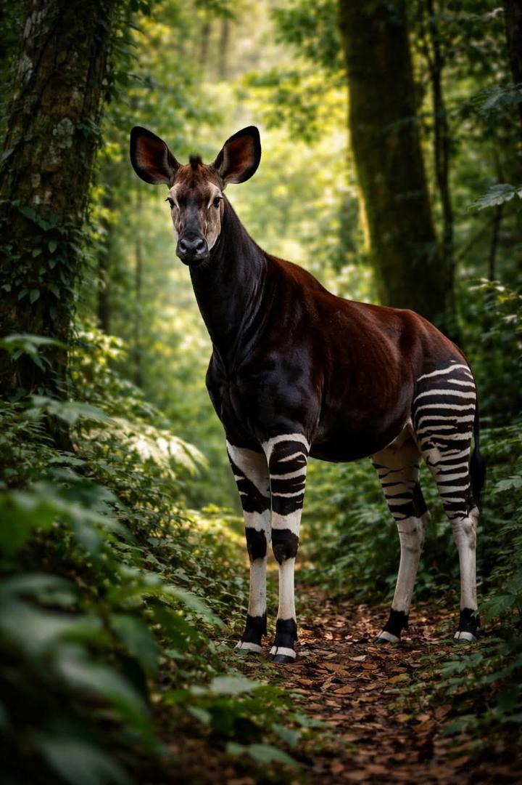
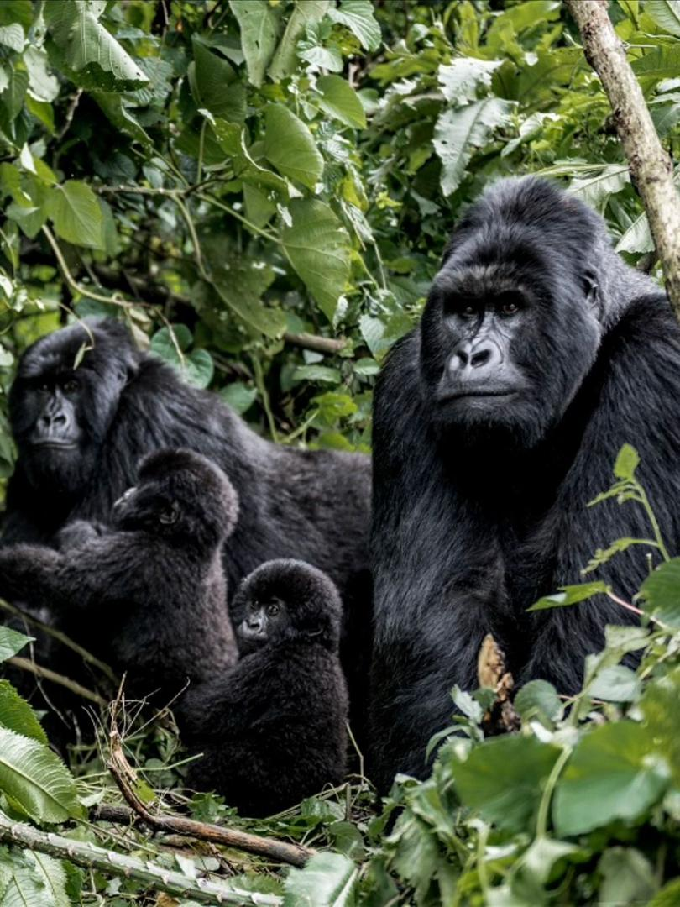
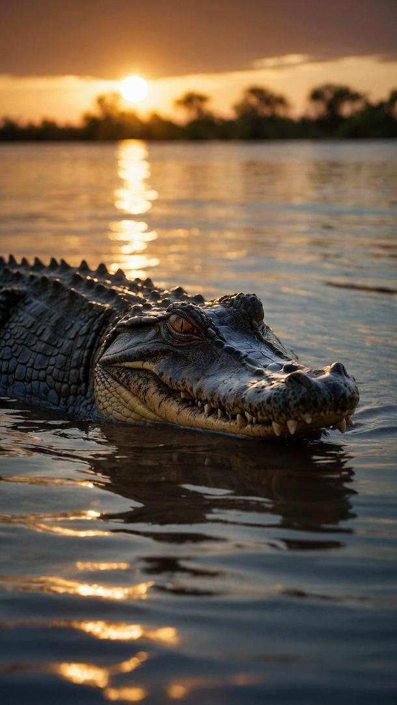

CongoExplorer
Au cœur de l’Afrique centrale s’étend l’un des plus vastes et des plus mystérieux sanctuaires naturels de la planète : la faune congolaise. Ici, la vie ne se contente pas d’exister, elle s’impose, s’adapte et évolue dans une diversité presque ininterrompue, façonnée par des millions d’années d’équilibre entre les espèces et leur environnement. Des forêts denses du bassin du Congo aux savanes ouvertes , en passant par les rivières profondes et les zones humides, chaque écosystème raconte une histoire différente, mais toutes sont liées par un même fil invisible : celui de la vie sauvage . Dans cette immensité verte, la biodiversité atteint des proportions remarquables. On y recense plus d’un millier d’espèces d’oiseaux , des centaines de mammifères, ainsi qu’une richesse exceptionnelle en reptiles, amphibiens et insectes. Certaines de ces espèces sont encore en cours de découverte ou d’étude, comme si la forêt elle-même refusait de livrer tous ses secrets. Les forêts du bassin du Congo, deuxième poumon vert de la planète après l’Amazonie, abritent également des espèces endémiques uniques, introuvables ailleurs sur Terre, témoins vivants d’un écosystème ancien et fragile. Mais derrière les chiffres se cache une réalité plus subtile : celle d’un équilibre délicat. Chaque espèce, du plus grand mammifère au plus petit insecte, joue un rôle essentiel dans le fonctionnement de cet univers naturel. Les prédateurs régulent, les herbivores structurent, les oiseaux dispersent les graines, et les insectes assurent la pollinisation. Rien n’est isolé. Tout est connecté. Et dans cette toile vivante, la disparition d’un seul maillon peut transformer silencieusement l’ensemble du système. C’est dans ce décor grandiose, entre puissance et fragilité, que vivent certaines des espèces les plus emblématiques du continent. Des créatures fascinantes, parfois discrètes, parfois majestueuses, que nous allons maintenant découvrir.

Discret, insaisissable et parfaitement adapté à son environnement, le léopard est l’un des prédateurs les plus redoutables de la faune congolaise. On le retrouve principalement dans les vastes forêts du bassin du Congo, notamment dans des zones protégées comme le parc national de la Salonga ou celui de la Garamba, où il évolue à l’abri des regards. Solitaire par nature, il privilégie l’ombre et la discrétion, utilisant la végétation dense pour se fondre dans le paysage et surprendre ses proies. Doté d’une agilité remarquable, il est capable de grimper aux arbres avec une facilité impressionnante, y transportant parfois ses prises pour les mettre à l’abri des autres prédateurs. Sa capacité d’adaptation lui permet également de vivre dans des milieux variés, allant des forêts épaisses aux zones plus ouvertes. Mais le léopard n’est pas seulement un symbole de puissance. Il incarne aussi l’équilibre fragile de son environnement. Sa présence dans ces régions reculées témoigne d’un écosystème encore vivant, où chaque espèce joue un rôle essentiel. Invisible la plupart du temps, il rappelle que dans la nature, ce qui ne se voit pas est souvent le plus déterminant.

Mystérieux et longtemps resté invisible aux yeux du monde, l’okapi est l’un des animaux les plus emblématiques de la faune congolaise. Endémique de la République démocratique du Congo, il vit exclusivement dans les forêts denses de l’Ituri, notamment au cœur de la réserve de faune à okapis, un espace protégé où il évolue à l’abri de l’agitation humaine. À la fois discret et solitaire, l’okapi se déplace silencieusement dans la végétation épaisse, utilisant son pelage unique pour se camoufler entre les ombres et les lumières de la forêt. Malgré son apparence rappelant le zèbre par ses rayures, il est en réalité un proche parent de la girafe, dont il partage certaines caractéristiques, comme sa langue longue et agile lui permettant d’atteindre les feuilles en hauteur. Animal insaisissable, il incarne la discrétion et la rareté. Sa présence dans ces forêts profondes témoigne d’un écosystème encore préservé, où la nature suit son cours loin des regards. Symbole unique de la biodiversité congolaise, l’okapi rappelle à quel point certaines richesses naturelles restent fragiles et précieuses, nécessitant attention et protection.

Imposants, puissants et pourtant profondément calmes, les gorilles comptent parmi les créatures les plus fascinantes de la faune congolaise. En République démocratique du Congo, on les retrouve principalement dans les forêts de l’est du pays, notamment au cœur du parc national des Virunga et du parc national de Kahuzi-Biega, où ils vivent en groupes organisés sous la protection d’un mâle dominant. Malgré leur apparence impressionnante, les gorilles sont des animaux paisibles, évoluant dans une structure sociale complexe basée sur la coopération, la communication et les liens familiaux. Ils passent une grande partie de leur temps à se déplacer lentement à travers la forêt, se nourrissant de feuilles, de fruits et de végétation, tout en interagissant entre eux à travers des gestes, des sons et des regards. Leur présence dans ces régions montagneuses et forestières fait d’eux des symboles vivants de la richesse naturelle du Congo. Mais elle rappelle aussi la fragilité de cet équilibre. Observer les gorilles, c’est comprendre à quel point la frontière entre l’humain et le monde animal peut sembler mince, et combien il est essentiel de préserver ces espèces uniques, témoins d’un héritage naturel exceptionnel.

Le crocodile fait partie des grands reptiles présents en République démocratique du Congo, où il vit principalement dans les fleuves, rivières, lacs et zones marécageuses. Il est particulièrement associé aux vastes étendues d’eau du bassin du Congo, où il trouve un environnement idéal pour se dissimuler et chasser. Animal discret mais redoutable, il passe une grande partie de son temps immobile dans l’eau, parfaitement camouflé, n’exposant que ses yeux et ses narines. Cette patience lui permet de surprendre ses proies avec une rapidité impressionnante lorsqu’elles s’approchent du bord de l’eau. Le crocodile joue également un rôle important dans l’équilibre des écosystèmes aquatiques en RDC, en régulant certaines populations animales et en contribuant à la dynamique naturelle des milieux humides. Présent dans plusieurs régions du pays, il symbolise la puissance et la survie au cœur des eaux congolaises, où la nature reste encore largement sauvage et imprévisible.